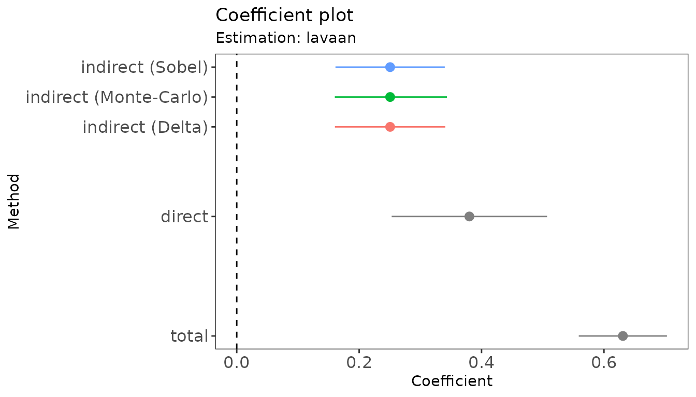
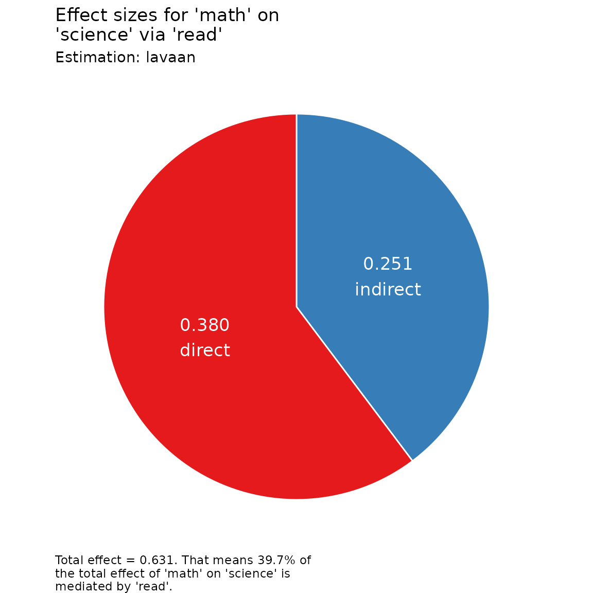

Working with the results
Source:vignettes/articles/working_with_results.Rmd
working_with_results.Rmdrmedsem() returns an object of class
rmedsem. Besides printing it, there are several functions
to summarize the results, extract estimates for further processing, and
visualize them. We use the simple mediation model from the Getting started section as an
example:
library(rmedsem)
mod.txt <- "
read ~ math
science ~ read + math
"
mod <- lavaan::sem(mod.txt, data = hsbdemo)
out <- rmedsem(mod, indep = "math", med = "read", dep = "science")Detailed output and compact summary
Printing the object gives a detailed, step-by-step description of the tests of the indirect effect and of the Baron & Kenny and Zhao, Lynch & Chen approaches:
out
#> Significance testing of indirect effect (standardized)
#> Model estimated with package 'lavaan'
#> Mediation effect: 'math' -> 'read' -> 'science'
#>
#> Sobel Delta Monte-Carlo
#> Indirect effect 0.251 0.251 0.251
#> Std. Err. 0.046 0.046 0.047
#> z-value 5.501 5.446 5.374
#> p-value 3.79e-08 5.15e-08 7.71e-08
#> CI [0.161, 0.340] [0.160, 0.341] [0.160, 0.343]
#>
#> Baron and Kenny approach to testing mediation
#> STEP 1 - 'math' -> 'read' (X -> M) with B=0.662 and p<0.001
#> STEP 2 - 'read' -> 'science' (M -> Y) with B=0.378 and p<0.001
#> STEP 3 - 'math' -> 'science' (X -> Y) with B=0.380 and p<0.001
#> As STEP 1, STEP 2 and STEP 3 as well as the Sobel's test above
#> are significant the mediation is partial.
#>
#> Zhao, Lynch & Chen's approach to testing mediation
#> Based on p-value estimated using Monte-Carlo
#> STEP 1 - 'math' -> 'science' (X -> Y) with B=0.380 and p<0.001
#> As the Monte-Carlo test above is significant, STEP 1 is
#> significant and their coefficients point in same direction,
#> there is complementary mediation (partial mediation).
#>
#> Effect sizes
#> RIT = (Indirect effect / Total effect)
#> (0.251/0.631) = 0.397
#> Meaning that about 40% of the effect of 'math'
#> on 'science' is mediated by 'read'
#> RID = (Indirect effect / Direct effect)
#> (0.251/0.380) = 0.659
#> That is, the mediated effect is about 0.7 times as
#> large as the direct effect of 'math' on 'science'
#> Upsilon (v) = Variance in Y explained indirectly by X through M
#> v(unadj) = 0.063, v(adj) = 0.061summary() condenses the same results into a table of the
indirect (for each estimation method), direct and total effects, the
resulting type of mediation and the effect sizes:
s <- summary(out)
s
#> Mediation analysis: 'math' -> 'read' -> 'science'
#> Estimated with 'lavaan' (standardized), N = 200
#>
#> Effects (95% CI):
#> Estimate Std. Err. z-value p-value Lower Upper
#> Indirect (Sobel) 0.251 0.046 5.501 3.79e-08 0.161 0.340
#> Indirect (Delta) 0.251 0.046 5.446 5.15e-08 0.160 0.341
#> Indirect (Monte-Carlo) 0.251 0.047 5.374 7.71e-08 0.160 0.343
#> Direct 0.380 0.065 4.43e-09 0.253 0.507
#> Total 0.631 0.037 0.559 0.703
#>
#> Type of mediation (significant: p < 0.05):
#> Baron & Kenny: partial mediation
#> Zhao, Lynch & Chen: complementary mediation (partial mediation)
#> (based on Monte-Carlo test)
#>
#> Effect sizes:
#> RIT = 0.397
#> RID = 0.659
#> Upsilon = 0.061
#> Upsilon (unadj.) = 0.063The summary is itself an object whose elements can be used in further analyses, e.g., the type of mediation or the table of effects:
s$mediation
#> $bk
#> [1] "partial"
#>
#> $zlc
#> [1] "complementary"
s$effects
#> effect method estimate se zval pval lower
#> 1 indirect sobel 0.2506159 0.04556196 5.500552 3.786031e-08 0.1613161
#> 2 indirect delta 0.2506159 0.04601847 5.445986 5.151917e-08 0.1604214
#> 3 indirect montc 0.2506159 0.04669944 5.373859 7.706911e-08 0.1602372
#> 4 direct <NA> 0.3801172 0.06478771 NA 4.434311e-09 0.2531357
#> 5 total <NA> 0.6309719 0.03730960 NA NA 0.5588379
#> upper
#> 1 0.3399157
#> 2 0.3408105
#> 3 0.3433785
#> 4 0.5070988
#> 5 0.7028962Extracting estimates
The standard extractor functions coef(),
confint() and nobs() work for
rmedsem objects:
coef(out)
#> indirect direct total
#> 0.2506159 0.3801172 0.6309719
confint(out)
#> 2.5 % 97.5 %
#> indirect 0.1602372 0.3433785
#> direct 0.2531357 0.5070988
#> total 0.5588379 0.7028962
nobs(out)
#> [1] 200The indirect effect is estimated with several methods (here Sobel,
Delta and Monte-Carlo). They share the same point estimate but differ in
their standard errors and intervals. By default, coef() and
confint() use the method that also underlies the Zhao,
Lynch & Chen approach (Monte-Carlo for lavaan and
modsem, bootstrap for cSEM, and the posterior
for blavaan). Use the method argument to
choose a different one:
confint(out, parm = "indirect", method = "sobel")
#> 2.5 % 97.5 %
#> indirect 0.1613161 0.3399157The level of all intervals is set when calling rmedsem()
with the ci.two.tailed argument:
out90 <- rmedsem(mod, indep = "math", med = "read", dep = "science",
ci.two.tailed = 0.90)
confint(out90)
#> 5 % 95 %
#> indirect 0.1749096 0.3287469
#> direct 0.2735509 0.4866835
#> total 0.5674115 0.6933806as.data.frame() returns the estimates of the indirect
effect for all methods as a data frame:
as.data.frame(out)
#> package method coef se zval pval lower upper
#> 1 lavaan sobel 0.2506159 0.04556196 5.500552 3.786031e-08 0.1613161 0.3399157
#> 2 lavaan delta 0.2506159 0.04601847 5.445986 5.151917e-08 0.1604214 0.3408105
#> 3 lavaan montc 0.2506159 0.04669944 5.373859 7.706911e-08 0.1602372 0.3433785Plots
plot() shows a coefficient plot of the indirect (for
each method), direct and total effects, or a pie chart of the indirect
and direct effects:
plot(out)
plot(out, type = "effect")
Bayesian models: equal-tailed intervals or HDI
For models estimated with blavaan, the intervals are
credible intervals computed from the posterior samples. By default,
these are equal-tailed intervals (the 2.5% and 97.5% quantiles for
ci.two.tailed = 0.95). Set hdi = TRUE to
obtain highest density intervals (HDI) instead, which requires the HDInterval
package:
library(blavaan)
bmod <- bsem(mod.txt, data = hsbdemo, n.chains = 3, burnin = 500, sample = 500,
seed = 1, bcontrol = list(cores = 3, refresh = 0))
out.ci <- rmedsem(bmod, indep = "math", med = "read", dep = "science")
out.hdi <- rmedsem(bmod, indep = "math", med = "read", dep = "science",
hdi = TRUE)
confint(out.ci)
#> 2.5 % 97.5 %
#> indirect 0.1573832 0.3398089
#> direct 0.2428480 0.5059463
#> total 0.5425477 0.6988324
confint(out.hdi)
#> lower upper
#> indirect 0.1591007 0.3412056
#> direct 0.2464126 0.5102203
#> total 0.5507015 0.7025515
summary(out.hdi)
#> Mediation analysis: 'math' -> 'read' -> 'science'
#> Estimated with 'blavaan' (standardized), N = 200
#>
#> Effects (95% HDI):
#> Estimate Std. Err. z-value p-value Lower Upper
#> Indirect (Bayes) 0.248 0.046 5.359 0.000 0.159 0.341
#> Direct 0.380 0.067 0.000 0.246 0.510
#> Total 0.629 0.039 0.551 0.703
#> For Bayesian estimates, 'p-value' is the posterior probability of
#> the opposite sign.
#>
#>
#> Effect sizes:
#> RIT = 0.395
#> RID = 0.653
#> Upsilon = 0.060
#> Upsilon (unadj.) = 0.062